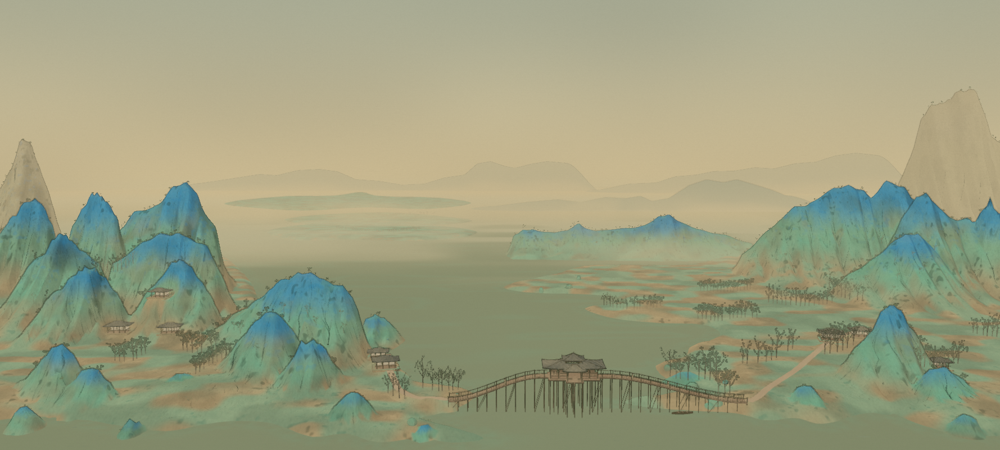
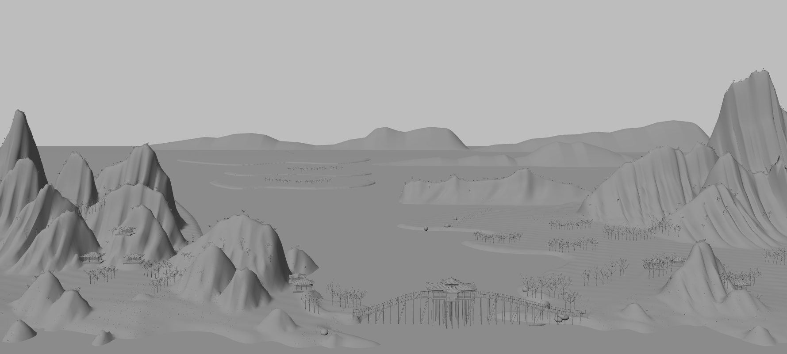
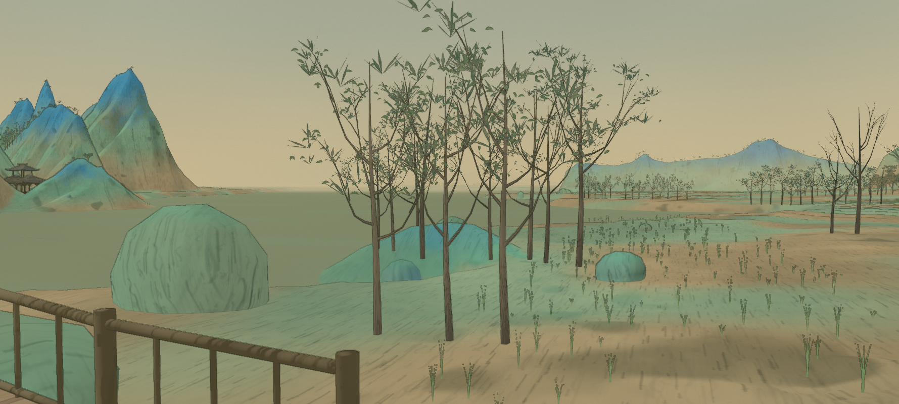
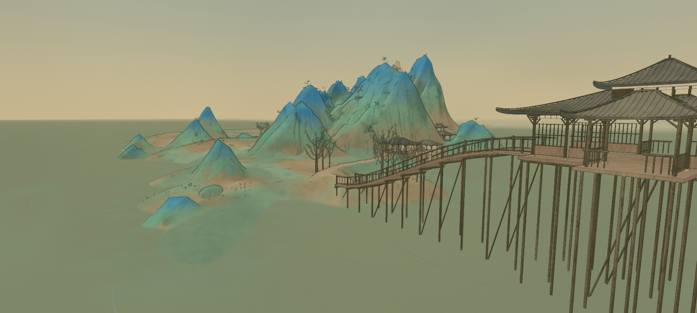
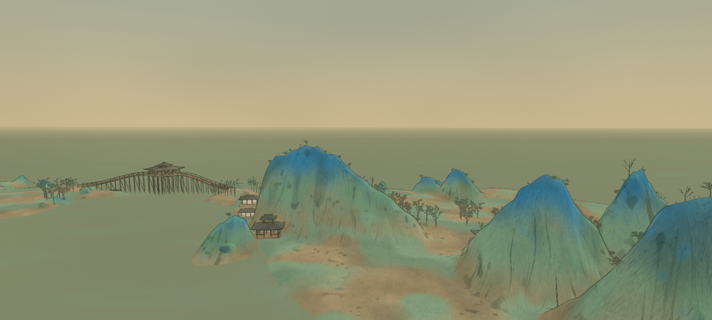

The land opens into water
Long continuous banks become curved tongues and inlets. The foreground returns to water, and three separate jade shoals break up the far lake. The eastern footpath now follows the terraces.
The painting opens around a broad lake. Its shores fold into short promontories, and its trees gather in separate lines along those curves. This revision follows those relationships while retaining blue mineral crests, green faces and warm paper.


Long continuous banks become curved tongues and inlets. The foreground returns to water, and three separate jade shoals break up the far lake. The eastern footpath now follows the terraces.
Short, uneven rows replace the road avenues and random lowland forest. Their roots follow the observed paths on real terrain. Open pointed branches, small ridge trees and grasses remain.
Three unequal contours replace the repeated horizon waves. The remote towers become pale and quiet; the nearer peaks retain their strong blue-green color.
The earlier foreground woods obscured the small hills, the scattered rocks formed an overly regular shore border, and a small blue hill sat beneath the bridge. The woods and stones are reduced; that hill now sits behind the eastern approach, closer to its place in the painting.
Some differences remain visible: the mountain faces are still more regular and upright, the right-hand crag lacks the painting’s pronounced overhangs, and the villages are sparse and evenly arranged. The painting also has much finer woven-paper texture and more irregular brush deposits. These are observations for further refinement, not claims of a complete reconstruction.




The source photograph remains unchanged. No source pixels are projected onto the landscape. Checks cover root placement, open inlets, path grounding, traced ridge registration and repeatable rendering; they do not measure artistic fidelity. Geometry evidence · Scene checks · Observation record